For OSM Street
OpenStreetMap is a vast collection of geographical knowledge on our planet that can be edited and used by everybody free of charge. Is most well-know for its detailed world map, but its data is available to the public for any purpose.
So if some buildings you know of are missing from OpenStreetMap or have the wrong height in OSM Street View: Just add them yourselves! This page tells you how to do it.
Step 1: Find the Right Map Spot
Head over to www.openstreetmap.org and navigate to the map position where you want to modify the map. You should zoom in to zoom level 18 or higher before editing the map (the current zoom level is shown in your browser address bar right after the text "/#map=").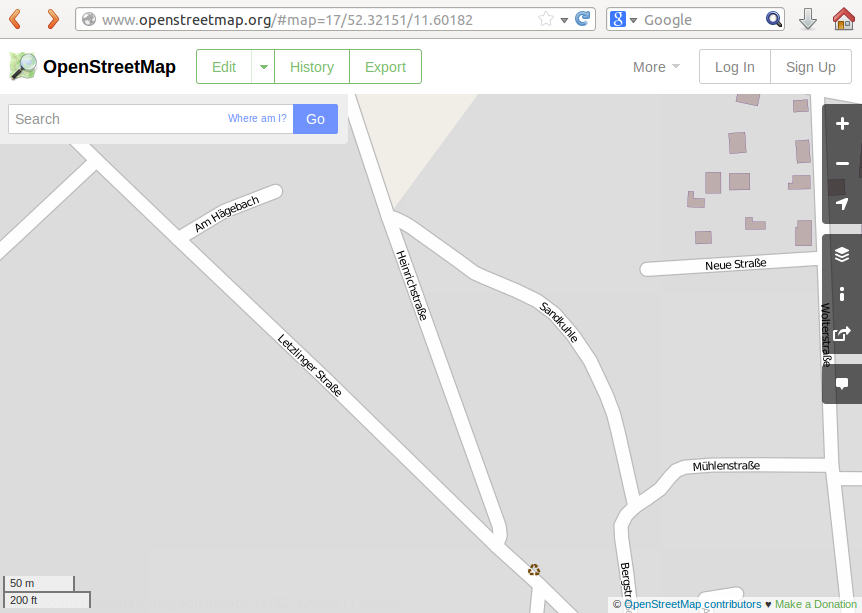
Step 2: Login
Click the "Edit" button and login either using OpenID (for example with your Google account) by clicking the corresponding icon, or register a new OpenStreetMap account by clicking the corresponding link (if you already got an OpenStreetMap account, use that one instead).
This should return you to the map view, which has now changed to show aerial imagery overlayed by the OpenStreetMap data.
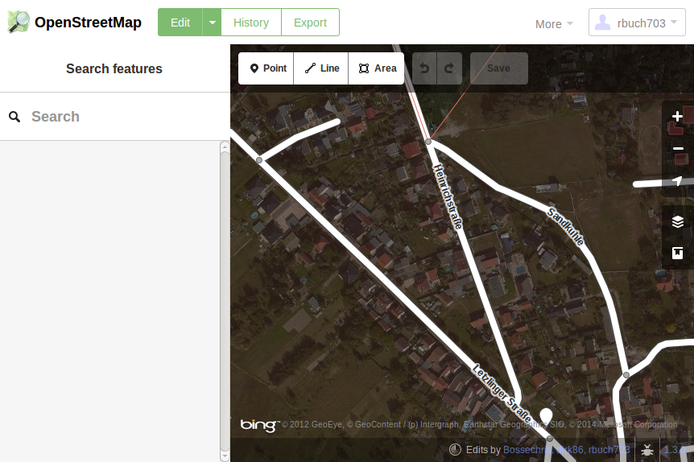
If you want to add a building to OpenStreetMap, read on. If the building aready exists and you just want to adjust its height, skip ahead to Step 4.
Step 3: Map the Building
To add a building to OpenStreetMap, first map its outline: Click the "Area" button at the top-left corner of the map view.
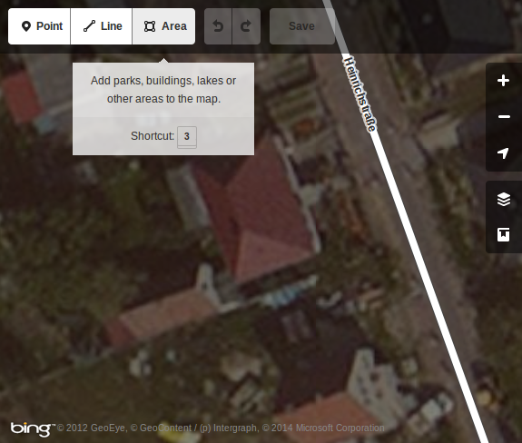
Then draw the building outline by clicking on the map to add outline points. Finish the outline by clicking on the first outline point you have drawn.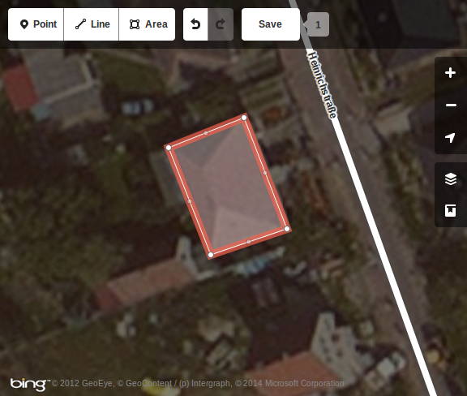
You can still alter the area shape by first clicking on it to select it, and then dragging the outline points you want to adjust. If your building consists mostly of edges that should be perpendicular to each other, you can additionally select "Square the corners" from the popup wheel menu to improve the building shape automatically.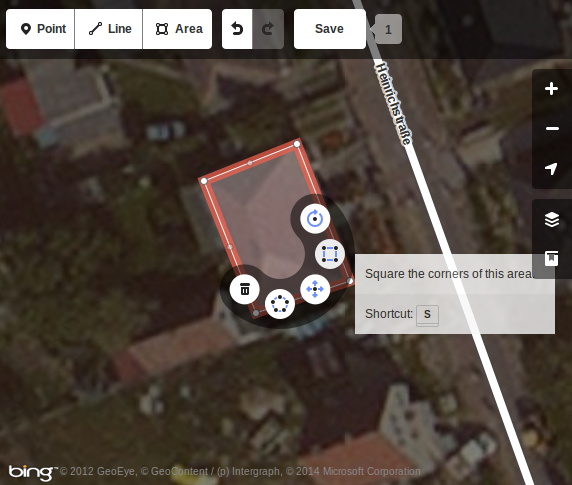
Now that you have marked an area, you have to tell OpenStreetMap that this area should represent a building: First, click on the area you have drawn to select it (it outline should now be highlighted).
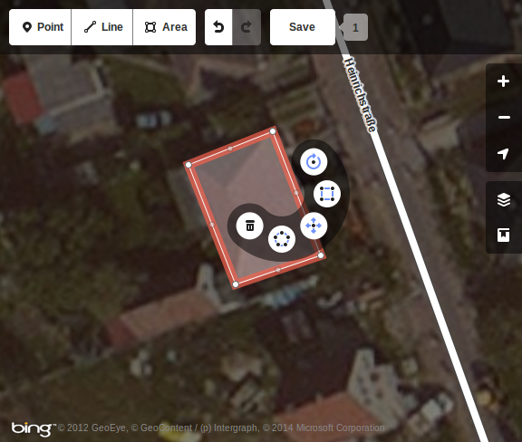
The left sidebar should contain a list of possible feature types that your outline may represent (e.g. "Buildings", "Parks", etc.). Select the "Building" group of feature types, and from the expanded list of "Building" features select the one that most accurately corresponds to your building (or just select the generic "Building" entry for now).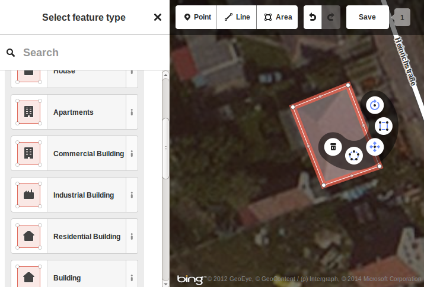
Your building should now turn red on the map and the left sidebar should show a list of building properties.
Step 4: Adjust the Building Height
Now that you mapped your building (or found an existing one that you want to edit), you'll want to set its height. Click on the building to get a list of its properties on the left sidebar. Then scroll to the bottom of the left side bar and click on its entry "All tags" to expand the list of attributes of that building. Attributes are key/value pairs, where the left-hand side entry (the "key") gives the attribute name, and the right-hand side entry gives the value for that key. There are two ways to affect the height at which a building is rendered in OSM Street View: either by entering the building height directly, or by entering the number of building levels (if both values are present, OSM Street View will use the actual height and ignore the number of building levels). The next paragraphs explain how to set these values.Method 4a: Set the Building Height Directly
If you know the actual building height, you can enter it directly: The attribute list should at least contain an entry "building", and may contain many more. If it already contains an entry "height", you can edit that entry. Otherwise create a new entry by clicking on the plus sign below the attribute list and entering "height" in the left column of the new entry.
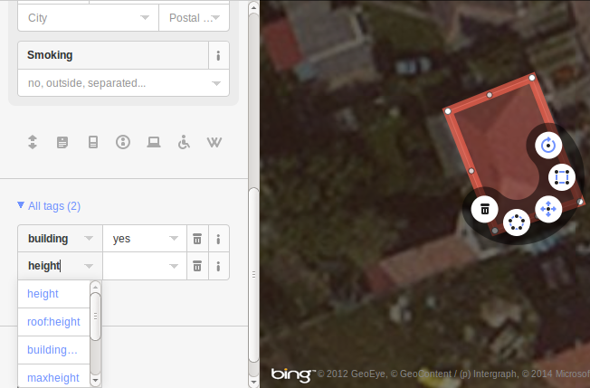
In the right column, enter the building height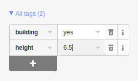
Method 4b: Set the Number of Building Levels
If you don't know the actual building height, but know the number of building levels, you can have OpenStreetMap store that number, and OSM Street View will estimate the building height based on the number of building levels (currently by assuming a height of 3.5m per building level). In order to do so, find the attribute with the key "building:levels", or - if it does not exist yet - create an attribute with that name by clicking on the plus sign at the end of the attribute list and entering "building:levels" (without the quotes) into the left edit box. As its value (in the edit box to its right), enter the number of buildings levels that are
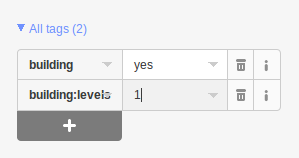
Step 5: Save your changes
When you're done editing, save your changes by clicking the white "Save" button at the top of the map view.
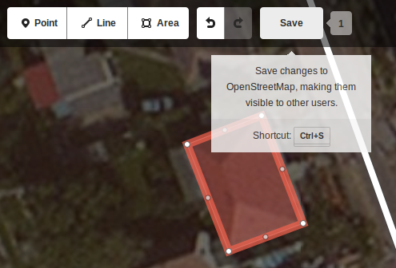
On the left sidebar, enter a commit message describing your changes in the corresponding box, and click the blue "Save" button to finally save your changes. Then click the "OpenStreetMap" title in the upper left corner or the icon next to it to return to the main map.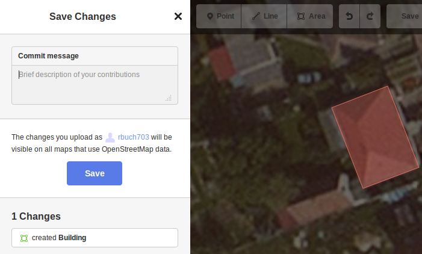
Congratulations, you just made your first contribution to OpenStreetMap!Viewing the results
Your changes to OpenStreetMap should be visible on the main map after a few minutes. However, in order to see them, you'll have to tell your browser to refresh the page while bypassing its cache (usually by pressing CTRL+F5). These map changes should be visible in OSM Street View as the ground texture at about the same time (also after pressing CTRL+F5 to refresh the view).